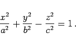
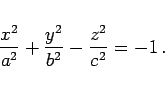

Inhalt Index DeskTop Bronstein

 Geometrie Vektoralgebra und analytische Geometrie Analytische Geometrie des Raumes Flächen 2. Ordnung, Gleichungen in Normalform
Geometrie Vektoralgebra und analytische Geometrie Analytische Geometrie des Raumes Flächen 2. Ordnung, Gleichungen in Normalform


|  | (3.432) |
(S. auch geradlinige Erzeugende.)
|  | (3.433) |
Die Schnittfiguren von Ebenen parallel zur z-Achse sind für beide Hyperboloide Hyperbeln. Im Falle des einschaligen Hyperboloids können es auch zwei einander schneidende Geraden sein. Ebenenschnitte parallel zur x,y-Ebene sind Ellipsen.
Für a = b kann das Hyperboloid durch Rotation einer Hyperbel mit den Halbachsen a und c um die Achse 2c erzeugt werden. Diese ist im Falle des einschaligen Hyperboloids imaginär, im Falle des zweischaligen reell.